Double Diamond · Great Learning · 2025–2026
Assisty: Making AI Grading Accountable
A grading assistant that drafts a rubric from scripts an educator has already marked, grades the cohort against it, and hands back every score with the evidence it was drawn from — researched, defined and shipped in code by one designer.
Project Overview
- Role — Principal UX Designer (IC)
- Company — Great Learning
- Timeline — 13 months (Sep 2025 – Sep 2026)
- Team — 1 Designer (research → shipped frontend), backend & platform engineering
- Tools — Figma, user shadowing, code audits, React/TypeScript, Claude Code
- Constraint — Existing APIs. No backend contract to renegotiate.
The Problem
Assisty shipped a working grading product in year one — then read as flat, inconsistent and hard to trust. Educators wouldn't publish a grade they couldn't account for to a student who challenged it, and they skipped the dashboard entirely.
The Solution
A double diamond run over the live product: audit and measure what shipped, converge on one root cause, rebuild the system and the grading workflow around explicit human authority, then enforce it with checks that fail the build.
By the Numbers
Across 13 months, 353 of them in the July 2026 redesign sprint
Of TypeScript across 410 files, shipped as the production frontend
Audited utility by utility to find why the UI read as flat
Independent typography decisions reduced to six named roles
Off-scale spacing values, with a ratchet that fails the build if it rises
Component libraries shipping at once; the linter now errors on the old one
Figures measured from the production repository, September 2026. Adoption and time-saved metrics sit with the programme team and are not included here.
The Shape of the Work
Two diamonds. The first widens to find out what is actually wrong and narrows to a single sentence. The second widens into a system and a redesign, then narrows to something a build check can hold in place. The second diamond didn't start until the first had produced that sentence.
01 · Discover
Audit what shipped
423 files · every utility counted · educators shadowed at the start of a day.
02 · Define
One root cause
No typography primitive = 375 lone decisions. And: the model may draft, never publish.
03 · Develop
System + redesign
Tokens · Text primitive · design briefs · a grading workflow with two human gates.
04 · Deliver
Enforced
Ratchets on pre-commit. The count can only go down.
The Challenge
The complaint from educators was not "this is ugly". It was vaguer and worse: the product felt unreliable. Vague feedback is a measurement problem, not a taste problem — so the first job was to find something countable.
Underneath it sat a second challenge with nothing to do with pixels. A grade is a claim an educator has to defend. If a student asks why they lost two marks, "the system decided" is not an answer anyone can stand behind. Any product that puts a model near a transcript has to make the human's authority structural, not implied.
"I'm not worried it will be wrong sometimes. I'm worried I'll have to explain a number I didn't arrive at."
— Educator, during shadowing
Phase 01 · Discover Diverge
Research & Discovery
I did three things in parallel: captured the live product screen by screen, counted every typography and spacing decision in the codebase, and watched educators actually open the tool at the start of a working day.
1. A fixed before-state
I captured the working product and committed the shots into the repository. A before-state nobody can relitigate later is worth more than a memory of one.
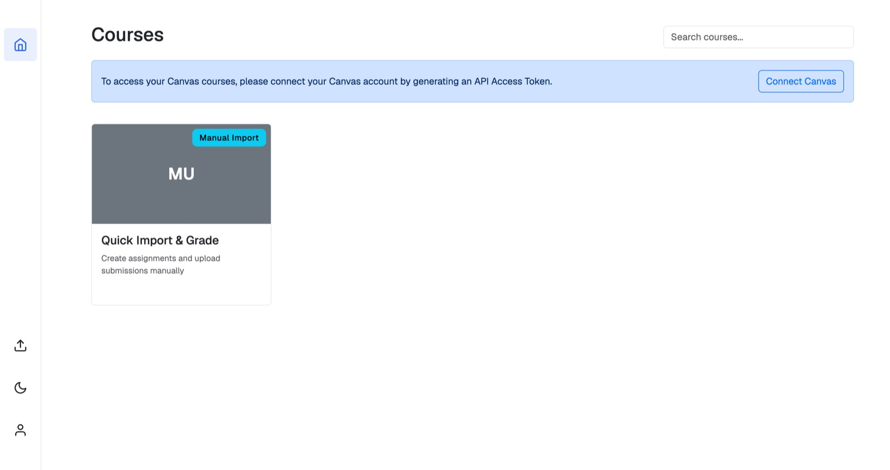
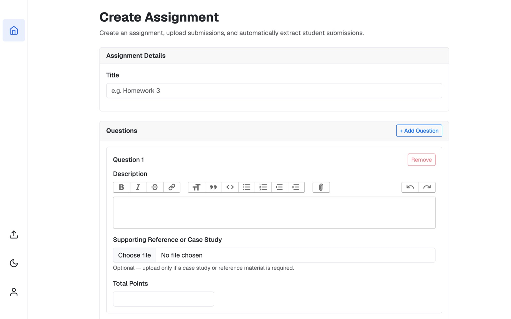
Choose file control inside a designed form, and four intended levels of heading compressed
into two.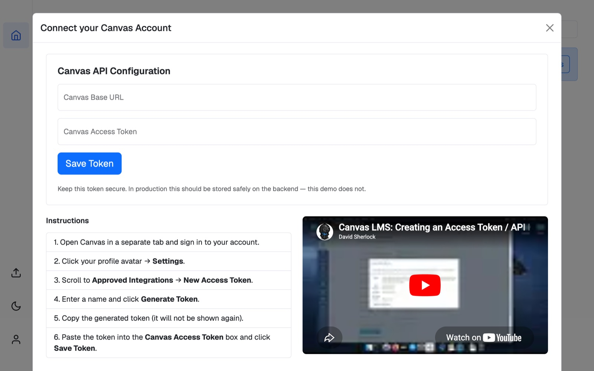
2. Then I counted
Screenshots tell you something is wrong. Counting tells you what. I went through every typography and spacing utility across 423 source files.
| Measured | Finding | Figure |
|---|---|---|
| Type size | Share of all text set at 14px or 12px | 77% |
| Type weight | Share of all weighted text set semibold | 84% |
| Spacing | Utilities off the indexed scale (287 of 962) | 30% |
| Worst offender | p-3 / 12px — a step the scale forbids | 157 uses |
| Contrast | Inactive accordion rows faded to opacity-65 | 3.82:1 |
| Libraries | Component libraries shipping side by side | 2 |
3. And I watched people use it
The behavioural finding was blunter than any number: educators skipped the dashboard. They opened Assisty mid-job — forty submissions uploaded yesterday, grading started, tab closed — wanting one thing: where do I pick up, and did anything break?
The dashboard answered neither. It showed lifetime counts — 28 rubrics created, 340 evaluations completed — in the largest type on the page, and the most recently touched assignment, which is never the same as the one that needs you. If a run had failed at submission 12, the page said nothing at all.
The insight
It wasn't a bad dashboard. It was a dashboard answering a question nobody was asking.
Phase 02 · Define Converge
Defining the Problem
Everything above narrowed into two sentences. The rest of the project is an answer to them.
One: hierarchy is a ratio, and we had removed it
The type and spacing numbers looked like two problems. They were one — and naming it correctly is the piece of work I would defend hardest here.
There was no typography primitive. Nothing in the codebase encoded "this is a section title" — only "this is 14px semibold". So roughly 375 text nodes each picked their own size and weight, independently, at the moment they were written. A decision made 375 times in isolation always converges on the safe middle of the scale. That is exactly what happened, and it explains the strangest symptom: every single component passed review, and the assembled screen still read as mush.
Consistency is not a property a single component can have. It only exists across a set.
Which reframed the fix entirely. The remedy was not more care per component — it was fewer places where the decision could be made at all.
Two: the model may draft, but it may never publish
The trust problem needed a structural answer, not a reassuring one. The interaction model had to contain explicit points where authority transfers from machine to human — and the product had to be incapable of skipping them.
The human gate. Authority crosses the line twice, and neither crossing can be skipped or automated away. Every claim the product makes about accountability reduces to this diagram.
The principles that came out of Define
Urgency over recency
Rank by what is blocked, not by what changed last. A failed run from Tuesday outranks a healthy upload from an hour ago. Recency is a tiebreaker, never the sort key.
Every number is a door
A count that can't be acted on doesn't belong on the page. If a tile shows 6, clicking it shows those six. Lifetime totals fail this test and were cut.
An empty queue is the goal
"You're all caught up" is a real answer and a good one — the state the page is designed to reach, not a gap to pad with vanity metrics.
Never credit the machine
User-facing copy says Assisty, never "AI Grader", and never attributes a judgement to AI. The educator owns the grade, so the interface never offers to share the blame.
Phase 03 · Develop Diverge
Design Process
This is the part of my practice that changed most on this project. On a product whose behaviour is the design — long grading runs, partial failure, confidence, human override — a static frame can't carry the argument. So I stopped writing specs for other people to build, and built it.
Designing in code, against APIs that already existed
Every endpoint I needed was already live and stable. My job wasn't to negotiate a backend contract — it was to find the interface hiding inside one that had been designed for a different UI. So I worked directly in the codebase: one API slice, server state through RTK Query, generated hooks in components, and never a raw request in a view. When an old response shape didn't fit a new screen, I composed around it on the client rather than filing a ticket and waiting a sprint.
That produced a constraint worth naming honestly: two generations of the API are still live side by side. The older endpoints stayed because Analytics reads them for assignments graded before the redesign existed. Designing on top of your own history, rather than pretending it isn't there, is most of the job on a product this age.
Collapsing a state machine into a walk
The grading backend tracks a dozen states. An earlier build exposed them as navigable sections and testing was brutal — educators opened the tool, saw five places they could be, and asked which one they were supposed to be in. The redesign derives a single screen from the assessment's state and renders only that. Secondary surfaces open over the current step, never away from it, so someone working down a roster never loses their place in it.
12 backend states
Resolved to exactly one screen
Opens over, never away
The primitive that fixed the ratio
Brand navy anchors at the wordmark's own colour rather than at the midpoint of a ramp, so every tint derives from the mark, and the neutrals are hue-aligned to it rather than achromatic. Then the piece that actually answered Define's first sentence: a Text primitive with named roles.
You no longer write a size and a weight. You name what the thing is — page-title, section-title, field-label, body, caption — and the primitive owns the pair. If no variant fits, you add one to the primitive. You never override at the call site, because that is precisely how the ramp collapsed the first time.
Migrating off the old library, in the open
The redesign needed one component system, not two. I wrote the migration as a document anyone could execute, ordered by how much time each item costs you when you get it wrong. The three traps, in order:
- The old library's spacing unit is 8px; the new one's is 4px. Every number doubles. A padding of 2 becomes p-4.
- The xs breakpoint reverses meaning. In the old system it meant "0 and up"; in the new one it means "≥600px". Porting it literally leaves phones unstyled — the single most common silent regression in the whole migration.
- Never put both styling systems on one element. The old library emits unlayered CSS; the new utilities live in a cascade layer, and unlayered always wins regardless of specificity. The new class silently loses and you spend an afternoon on it.
It finished. The old library is out of the dependency tree, and the linter now errors on any import of it — so the migration cannot quietly reverse.
I turned my own process into tooling
Rather than keep the method in my head, I wrote it into the repository as a set of designer workflows that live beside the code: design brief → information architecture → task breakdown → build → design review, with a token workflow for palette work and a "grill me" one for stress-testing an approach before committing to it.
Each surface's output lands in the repo as a brief, an IA document and a review. The reviews name defects in computed pixels and contrast ratios rather than impressions — "the search placeholder renders at 16px against 12px roster rows; the filter is a third larger than the list it filters" — so a finding is verifiable by someone who wasn't in the room.
Reference The whole app
The Product in Full
Everything above is method. This section is the product itself — every surface, in the order an educator meets it, with the design reasoning attached to each one. If you only read one part of this case study, read this: it is where the principles stop being principles and start being screens.
What Assisty is
Assisty grades long-form, subjective student work. Not multiple choice — that grades itself. The things worth asking: a derivation, a case analysis, a reflective essay on organisational behaviour, a design rationale. Work where the reasoning matters as much as the answer, and where a human has to read the reasoning to mark it fairly.
The users are university and bootcamp faculty, programme managers and teaching assistants handling cohorts of twenty to several hundred. Their constraint is never "I can't grade this" — it is "I can't grade three hundred of these by Friday, and if I split the batch across four people, two students who wrote the same answer will get different marks."
So Assisty is not an autograder. It is a drafting and consistency instrument with a human signature at both ends: the educator agrees to the standard before it is applied, and confirms every result before it is published. The model does the volume. The educator keeps the authority.
Getting in
The login screen is the only piece of marketing the product has, and it does one job: state the promise plainly before anyone has used anything. A split card — a duotone photograph of an educator marking papers on the left, the form on the right — with a rotating value-proposition slider that says what the product does in six short claims. Below the large breakpoint the marketing panel is dropped entirely; vertical space on a phone belongs to the form.
The dashboard is a work queue
This is where the Discover finding landed. The old dashboard showed lifetime totals in the largest type on the page. The new one answers the only question educators arrive with: where do I pick up, and did anything break? Four tiles — needs review, grading now, rubric drafts, failed — each one a door to the items behind it. Below them, Needs your attention: a ranked list where every row carries the action that unblocks it. A failed run outranks a fresh upload. When the list is empty, the page says so, and that is the state it is designed to reach.
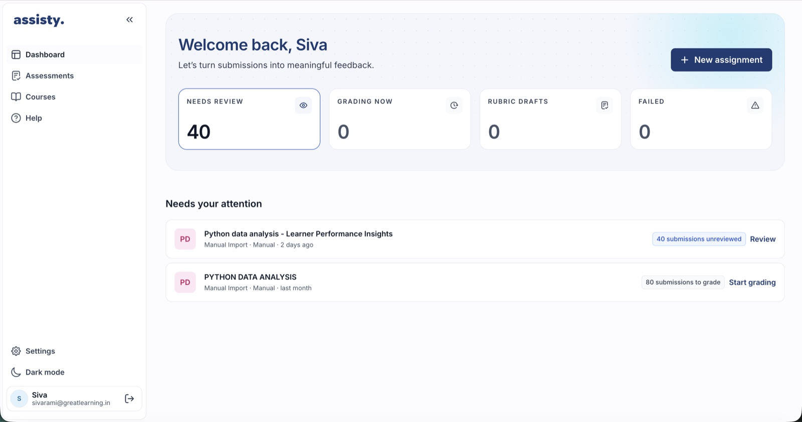
Two front doors
The only genuine fork in the product: does your institution run Canvas, or not? Connect the LMS and every course you teach arrives with its assignments and its enrolled students. Don't, and you upload an assignment and a ZIP of submissions by hand. Both paths land in the same Assessments list, and behave identically once opened.
Treating them as equals was deliberate. Manual import is not a degraded mode — plenty of programmes run assessments outside the LMS entirely, and treating that as second-class quietly tells half your users they're holding it wrong. The Canvas connection itself moved out of a one-time modal and into Settings › Integrations, where connection state belongs and can be revisited.
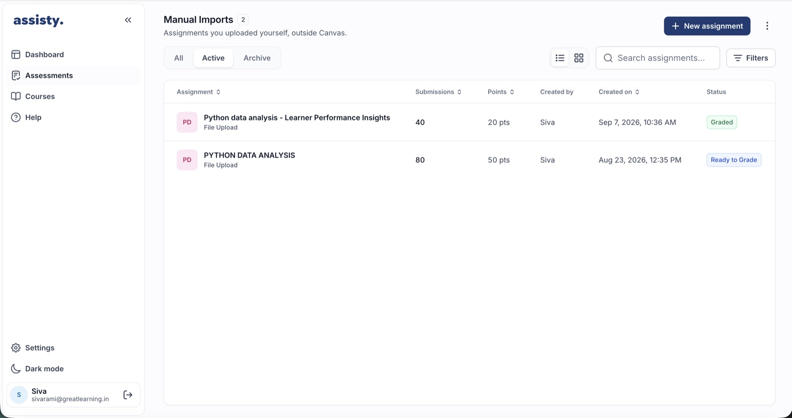
Creating an assignment
Assignment creation is the longest form in the product, and the place where the most design time went. The insight that shaped it: the educator already has the assignment. It exists as a Word document or a PDF handed to students weeks ago. So the first choice on the screen is upload the assessment, and Assisty prefills the title, the description, the questions and any marking criteria it can find.
Extraction from an arbitrary document is probabilistic, and a silent mistake here poisons everything downstream — a question worth ten marks read as worth one will quietly mis-grade an entire cohort. So the interface says, at the point of upload, that the extracted content needs review. The product tells you it might be wrong before you find out.
Each question carries its text, its points and an optional marking scheme: named criteria, each with its own allocation. Making the scheme optional was contested. Requiring one would produce better rubrics every time — but forcing educators who don't have one to invent it before seeing a single draft turns a five-minute setup into an afternoon. Optional means the product meets both, and the rubric step fills the gap for anyone who skipped it.
The assignment workspace
Every assignment, however it arrived, resolves to one workspace: Details, Questions and Rubrics on the left, Submissions on the right. This is the product's spine. The grading backend tracks a dozen states, but the workspace shows exactly one next step, and secondary surfaces open over it, never away from it.
Submissions arrive as a ZIP, as loose files, or straight from the LMS, in named batches — "Upload 1", "Section B resubmissions", "Late submissions" — that can be graded, reused and cloned. Real cohorts don't arrive at once; modelling them as one forces educators into workarounds. Each batch shows its own state, and a misnamed file is caught in a verification step before anything is committed. Caught there it costs ten seconds; caught after grading it costs a re-run.
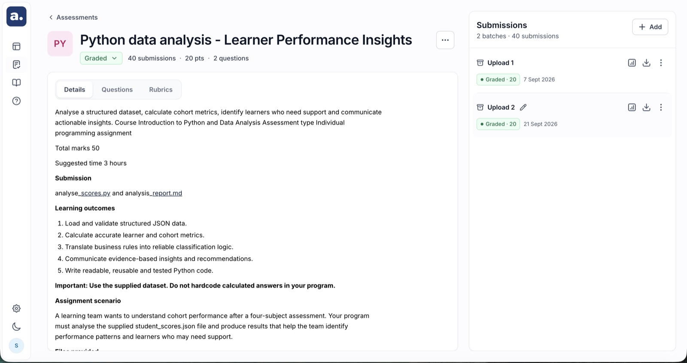
Generating the rubric
With the assignment and submissions in place, one button: Generate Rubric. Assisty reads the assignment, the supporting material and the sample submissions, and drafts a rubric aligned to the marking scheme if one exists — or proposes a structure if one doesn't. Reading real submissions is what makes the output usable: a rubric written after seeing how twenty students actually answered captures the misconceptions that specific cohort brought, which is exactly what an experienced marker calibrates against on their first ten scripts.
The wait is designed honestly. The first build showed a spinner and educators reloaded — reasonably, because a spinner makes no promise. The replacement shows the pipeline's stages, a determinate bar, and an estimate that says "Estimating" while it is estimating rather than inventing a confident number. You can leave the page; the work continues.
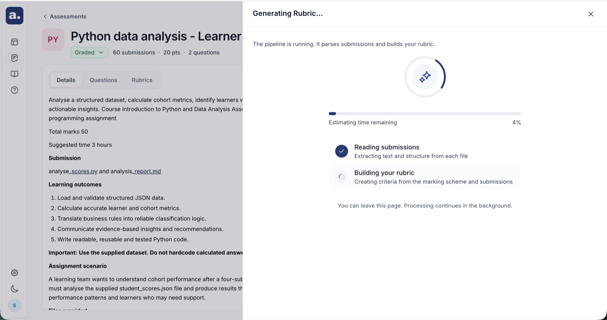
Review and approve — the gate
The rubric is the contract: if an educator is going to stand behind two hundred grades, they agree to the standard before it is applied, not audit it afterwards. Every criterion and every point value is editable, criteria can be added or removed, and nothing runs until the educator presses Approve & Start Grading. There is no skip, no "use defaults", no path around it. The label names both halves of what it does, because approving and starting are one decision, and splitting them into two clicks only invites the first to be made carelessly.
A points chip on each question shows the criteria total against the question's actual marks and flags when they diverge. A rubric whose criteria sum to eight against a ten-mark question will silently under-mark every student. Catching that takes one chip. Catching it afterwards takes a regrade and an apology.
The review surface — where the product earns trust
Results stream, so submissions become reviewable as they finish rather than at the end. Opening one gives the screen the whole product exists to reach. It is dense, and every element on it answers a question an educator would otherwise have to ask.
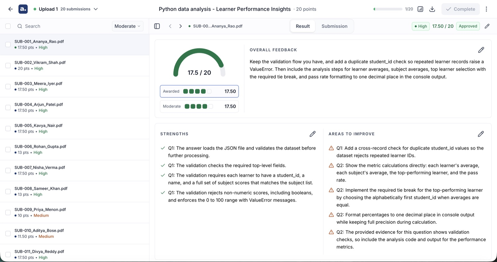
- A score gauge, not a number. 17.5 out of 20 reads as a position on an arc before it reads as arithmetic, which is how people actually judge whether a mark looks right.
- Overall feedback, editable in place. Written to the student, in the second person, and rewritable by the educator before it goes anywhere.
- Strengths and areas to improve, separated. Two columns, green and amber, each tied to specific questions. Feedback that mixes praise and criticism in one paragraph gets read as neither.
- A question breakdown with the criteria visible. Each question shows what was awarded against what was available, per criterion.
- Evidence from the submission, quoted. The actual sentences the score was drawn from, with a Find in submission link that jumps to them in the source document.
- A reason for score. Prose explaining why those sentences earned those marks against that criterion.
The evidence link is the single feature that changed how educators talked about the product. Before it, checking a score meant re-reading the whole submission. After it, a disputed mark is a two-second jump to the paragraph in question. It converts "do I trust this?" — unanswerable — into "is this quote the right quote?", which anyone can settle in seconds.
Confidence, strictness and approval
Three controls sit on that screen, and each one is a deliberate answer to a worse alternative.
- Confidence — high, medium or low on every roster row, visible before anything is selected. It is a triage instrument, not an accuracy claim: three levels are coarse enough to be truthful about what the judgement can support, and sharp enough to sort a pile. A numeric certainty score would imply a precision the model does not have; showing nothing would throw away the time saving.
- Strictness — lenient, moderate or strict, recalculating the whole batch against the same approved rubric. It came straight from research: educators were already editing individual scores in a consistent direction, one at a time, which is a person doing by hand what a parameter should do. The rubric stays the contract; strictness is how firmly it's applied.
- Approval — the second human gate. Nothing reaches a student until an educator approves it, individually or in bulk from the roster; disapprove sends one back rather than letting it through silently. Bulk approval was the sharpest ethical question in the project. Removing it produces rubber-stamping through fatigue, which is worse, so it stayed — with confidence visible before selection, streamed results so review happens during the run, and an explicit action rather than a default.
Analytics
The analytics panel is not a dashboard and deliberately refuses to become one. It answers one question an educator actually asks: is this spread believable? Highest, lowest and average. A score distribution. Top and bottom five performers. A question-level view. That last one is the most used: a question where the whole cohort scored badly is far more likely to be a badly worded question, or a topic that wasn't taught well, than thirty students independently failing. It turns grading output into teaching input. A flat distribution means the criteria didn't discriminate; a spike at zero means something is broken. Both are caught here rather than discovered by a student.
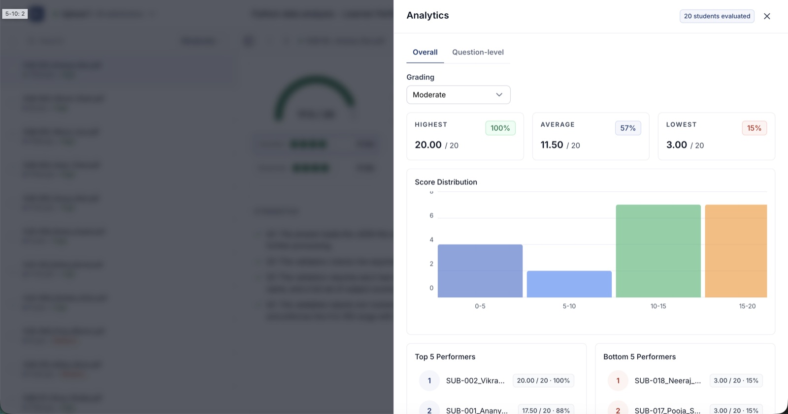
Export
Download Results produces a CSV carrying student identifiers, assignment details, qualitative feedback, and scores at both question and overall level. Faculty reconcile in spreadsheets, submit marks through systems Assisty will never integrate with, and share results with co-instructors who don't have accounts. Fighting that is pointless — and because a real export exists, nobody is screenshotting a table to send to a colleague.
The rest of the application
- Courses and Assessments — the two entry points, unified so a Canvas course and a manual assignment behave identically once opened.
- Rubrics — a library of approved rubrics, so a rubric refined over three cohorts is an asset rather than something regenerated from scratch each term.
- Reports — submissions, grading progress and history across assignments, for programme managers who need the view above a single cohort.
- Settings — integrations and API access, where connection state lives permanently rather than inside a one-time modal.
- Help — a ten-step illustrated walkthrough inside the product.
What runs underneath
React 19 and TypeScript, styled with Tailwind v4 against Untitled UI primitives built on React Aria, bundled by Vite on the Rolldown toolchain. Server state runs through Redux Toolkit and RTK Query: one API slice, generated hooks, and a rule the linter enforces — no component makes a raw request. Rich text is TipTap; submissions render through a markdown pipeline and a custom PDF text renderer that recovers headings, tables, footnotes and lists from a flat text stream, so a grader reads a document again, not a dump.
Formatting and linting run on Biome; the spacing and colour ratchets run on pre-commit through Lefthook. Errors report to Rollbar. The whole frontend is 51,000 lines of TypeScript across 410 files, with the grading workflow alone accounting for 124 of them.
The design system in practice
Three rules carry most of the weight, and all three are executable:
- Typography comes from the Text primitive. Name the role, never the size. Adding a variant is allowed; overriding at the call site is not.
- Spacing comes from an indexed scale. A pre-commit check counts off-scale values and fails when the count rises. The baseline came down from 383 to 101 as screens migrated.
- Colour lives in one theme file. No hex, rgb() or hsl() in a component — reach it through a token or add one. Same ratchet, baseline 14.
Colour semantics are fixed rather than decorative. Green means settled — approved, graded, complete. Amber means it needs you. Red belongs to destruction alone, which is why reset is the only red button in the product and regrade is not. Once a colour has a meaning it cannot be borrowed to make a button look livelier, and holding that line is most of what keeps a dense grading interface readable.
Phase 04 · Deliver Converge
What Shipped
Responsive is a definition of done, not a phase
A page is not migrated until it works at 375, 768 and 1440 with no horizontal scroll and nothing clipped. Most old screens were fixed-width desktop layouts, so a 1:1 port would have reproduced something that was never responsive. Every surface above has a phone layout that was designed, not tolerated.
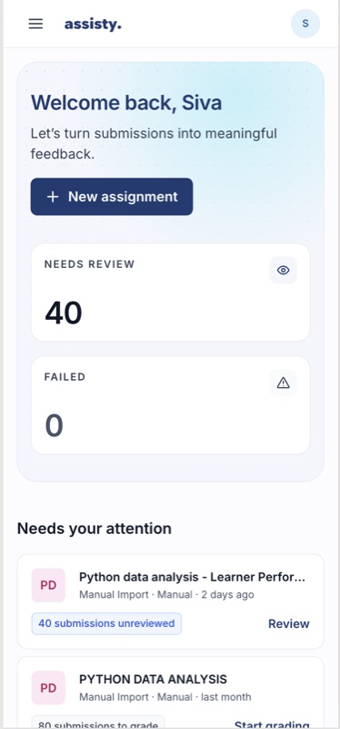
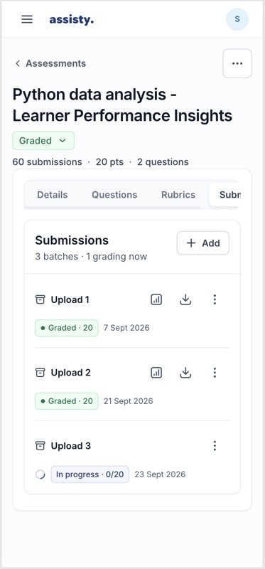
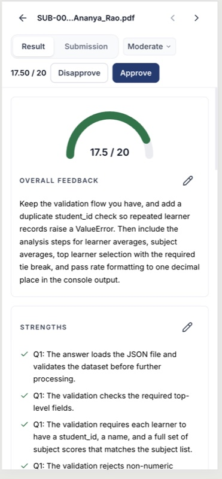
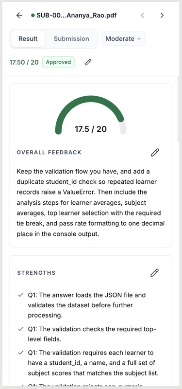
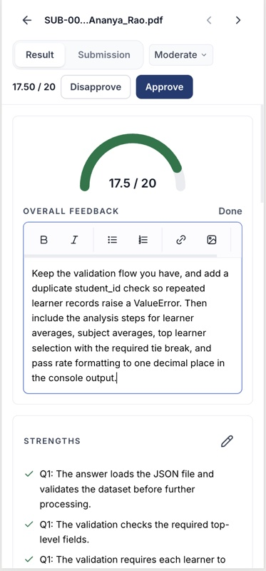
Login, dashboard, workspace, rubric generation, review and analytics at phone width. The two-pane review collapses to a single scroll, which works but is the one surface still owed a proper design pass.
The review that found more than a layout
The login pass is a good argument for why a design review has to touch the code. The desktop card was fine. Here is what the review actually caught:
Must fix 1"Keep me logged in" was a dead control
The checkbox was read only by itself — the token was written to localStorage either way. A user on a shared machine who deliberately unchecked it stayed signed in permanently. Now unchecked writes to sessionStorage and clears the other store, so the two can never disagree.
Must fix 2Touch targets below WCAG 2.5.8
The checkbox row measured 20px against a 24px minimum, and "Forgot password?" was bare 14px text. Fixed by sizing the checkbox up and giving the link a 28px hit area with negative-margin padding — growing the target without moving the row.
Must fix 3A carousel that could not be stopped
Slides rotated every five seconds indefinitely and the dots jumped without pausing it — failing WCAG 2.2.2 and 2.3.3. It now pauses on hover and focus, and does not auto-advance at all under prefers-reduced-motion.
The ratchets
A cleanup pass fixes a number. A ratchet fixes the trend. Both checks below run on pre-commit, count known offenders, and fail only when the count rises — so the system can't regress while a migration is still in flight, and every screen someone touches lowers the baseline.
| Mechanism | What it prevents | Was | Now |
|---|---|---|---|
| Text primitive | Size and weight chosen per call site | 375 lone decisions | 6 named roles |
| Spacing check | Padding and gaps off the indexed scale | 383 | 101 |
| Colour check | Raw hex or rgb() inside a component | unbounded | 14 |
| Linter rule | The old component library returning | 2 libraries | error |
| Token file | Colour defined anywhere but the theme | 4 undefined ramps | all authored |
The enforcement loop
Decision → token → primitive → ratchet check → merged. When a count rises the build fails and the argument goes back to the decision, not to a reviewer's opinion. The design rule and the thing enforcing it live in the same repository, which is why the system holds.
Key Design Decisions
Approval before execution, not audit afterwards
If an educator is going to stand behind two hundred grades, they agree to the standard before it is applied. Rubric approval is a hard gate with per-question sign-off, not a review step you can skip.
Every score shows its working, quoted from the source
A score decomposes into criteria, each with the sentences from the submission it was drawn from and a link that jumps to them in the document. It converts "do I trust this?" into "is this the right quote?"
Confidence as triage, not as an accuracy claim
Three levels, not a percentage. Coarse enough to be truthful about what the judgement can support, sharp enough to sort a pile of scripts by where attention is worth spending.
Strictness as a batch parameter
Educators were already adjusting scores in a consistent direction, one at a time. Exposing lenient/moderate/strict makes an adjustment that was happening anyway explicit, uniform and reversible.
An estimate that admits it is guessing
The first build showed a spinner and educators reloaded the page. The replacement shows real progress and says "Estimating" while it is estimating, rather than inventing a confident number.
Prefill is framed as a draft, at the point of upload
Extraction from an arbitrary document is probabilistic, and a misread mark allocation poisons an entire cohort. The product says it might be wrong before you find out, not after.
The destructive action is the only red one
Regrade re-runs the model against the same approved rubric. Reset throws the whole workflow away. They sound alike and are nothing alike, so only one is red, and only one is behind a confirmation.
Challenges & Learnings
Designing on top of your own history
Two API generations, two component libraries and three versions of the grading UI were live at once. Nothing could be deleted on aesthetic grounds. The work was sequencing removals so nothing regressed, not declaring a clean slate.
Generated UI drifts in a specific way
Every component had been produced to look correct on its own, and in isolation each one was defensible. Drift that is invisible locally and obvious in aggregate is the signature failure of building fast, and no amount of per-component review catches it.
The ethics of a bulk action
Bulk approval can turn a deliberate gate into a formality. Removing it produces rubber-stamping through fatigue instead, which is worse. The resolution was safeguards around it — streamed results, confidence visible before selection, an explicit action — not removal.
Enforcement beats intention
The scale and the rules were documented long before the drift happened. Documentation didn't stop it. A check that fails the build did. If a design rule isn't executable, assume it is optional.
Future Enhancements
Open in the repository today, stated plainly rather than tidied away:
- The contrast defect on inactive accordion rows is recorded in the audit and not yet fixed. It needs a ground change or an ink step, not a fade.
- Roughly 360 text nodes outside the migrated screens still choose their own size and weight. Mechanical now that the primitive exists — but not done.
- 101 spacing utilities remain off-scale. The baseline comes down screen by screen.
- Below the large breakpoint, two independent scroll panes can't survive on a phone. The merge works but hasn't had a proper design pass.
- Rubric reuse across cohorts exists as a library but not yet as a workflow — a rubric refined over three terms should be offered, not searched for.
Reflection
This was the first product I have taken from research all the way to production code myself, and the first where the design system's real artefact was a script rather than a library.
Key takeaway: putting a model near a high-stakes judgement is not a modelling problem. Trust is built by the interface — approval before execution, evidence attached to every number, and a human signature the product cannot forge.
What made it work
- Measuring the artefact — "it feels unreliable" was unusable until it became "77% of text is 14px". That turned a taste argument into an engineering one, and engineering arguments can be closed.
- Finding the single root cause — two symptoms, one absent primitive. Fixing the cause retired both.
- Building it myself — the prototype and the product were the same artefact, so the spec never went stale and no decision waited on someone else's sprint.
- Writing the process down as tooling — briefs, IA and reviews versioned with the code, so the method outlives my attention on it.
Personal Growth
- Designing the number of places a decision can be made, rather than designing each decision.
- Working inside a live codebase with two generations of everything, without demanding a rewrite.
- Writing design critique in computed pixels and contrast ratios, so it survives a room I'm not in.
- Knowing which rules to make executable — and accepting that the rest are suggestions.
Assisty — Great Learning, 2025–2026. Figures measured from the production repository in September 2026. Live screenshots are from the shipped product, September 2026; before-state captures are committed in the repository.